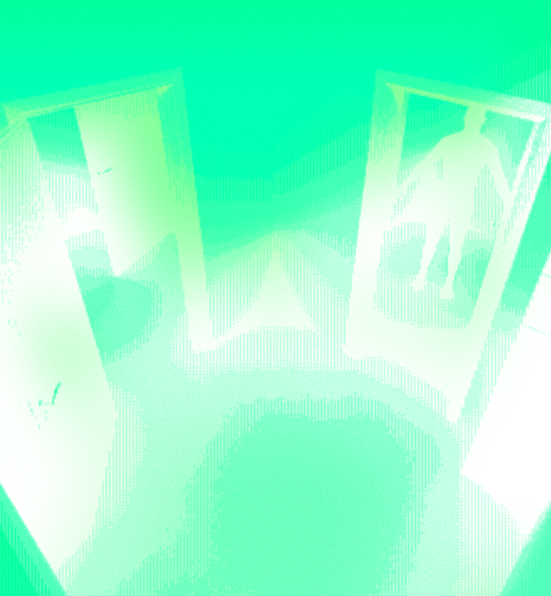

SCP-4240SCP Foundation - Secure Contain Protect |
Item: | SCP-4240 | |
|---|---|---|---|
| Class: | |||
On 15/02/2018, D-28392 was instructed to enter SCP-4240-1 and continue looping for as long as possible. The subject was equipped with a recording device and instructed to report on his experiences as he proceeded.
THE ROUNDABOUT GAMELooking to see something interesting? Then follow these instructions. ONE: Pick at least four doors in your house. At most eight. TWO: (USE CHALK!) Number each of the doors, making sure to write the numbers very clearly- this will be important later. Make sure you are able to pass through each door in order! THREE: Once the clock hits midnight, start going Roundabout! Once you hit the last door, go through the first one again! After ten loops or so, you'll see what the fuss is about… ;) REMEMBER: Don't leave the loop before you win! Don't go back through a door you've just gone through! Keep going until you reach the staircase - and then all will be well again (I'm talking to you now). |
Once an individual familiar with these rules undertakes the steps detailed, they will disappear from observation following three of the described loops. Interviews with surviving subjects indicate that, at this point, they enter an extradimensional space (hereafter referred to as SCP-4240-1) initially identical to their previous location. However, as they continue to perform loops within SCP-4240-1, the environment will grow noticeably darker and new rooms will appear between the numbered doors, significantly increasing the length and difficulty of the loop.
Image from SCP-4240-1 from the tests conducted with D-28392. (Exemple image, not official)
Any individuals who attempt to break the rules of SCP-4240 by going back through a door they have just passed through will be returned to their original location with a level of injury proportionate to the number of loops they have already made. Prior to twenty-five loops, subjects commonly survive with major bruising to the face and limbs, but all subjects who have attempted to exit past twenty-five loops have been killed via severe blunt force trauma. The exact mechanism by which these injuries are inflicted is unknown, as subjects retain no memory of the crossover period between SCP-4240-1 and the real world.
Past twenty-five loops, recordings have shown subjects reporting feelings of being watched and followed, as well as being touched by an invisible but physical presence. The nature of this entity is currently unknown.
Thus far, no individual has successfully 'won' SCP-4240 as described. (See Exploration Log 4240-1.)
SCP-4240 is a series of instructions, referred to as 'The Roundabout Game', which when followed allow an individual to access an extradimensional space. These instructions, as originally posted on parawatch.net in late 2015, are as follows:
- Uh? Hello? This thing on? (pause) They're, uh, they're telling me it's on. So they've got these four sort-of rooms set up, like, out of plastic or some shit. Gotta be honest, they look … really flimsy. Like I could just punch a hole in this. Are you sure this is fine? (pause) They're saying it's fine.
- Uh, loop three, I guess. Um, everyone's gone - I could see them before, kind of through the plastic, but now nothing. Plus, something just feels weird, like, with the floor? I dunno, I can't really say for sure. (gulps) So, I guess I go through door one again now.
- Loop five. Nothing's really changing. It's a little darker outside, maybe, but that might just be my imagination.
- Uh, loop six! Loop six! There's a new fucking room between three and four! Like, not made out of plastic or anything, it's, uh, it's brick as far as I can tell. And it stinks, there's something, uh, there's definitely something rotting in these bags. There's…
(sounds of rustling)
- Chicken. Oh, thank fuck.
- Loop seven. Yeah, the meat room's sticking around, it's still here. There's kind of a, uh, a porch between four and one now, too. Uh, you said to note my experiences, so I should probably mention this - I said I could punch a hole in the wall before, that it was real flimsy shit. Well, I can't anymore. Won't even budge. So that's something, I guess.
- Loop eleven. Starting to get tired. Is there a time limit on this, or…? Probably should have asked before we started.
- Loop sixteen. Got a hallway right after the meat room now, so getting from three to four's kind of a trek. Plus, it's starting to get dark. I tried the flashlight, but that's getting dark too. It's like watching TV with the brightness down.
- Loop twenty. Got a long-ass walk from three to four now. Meat room, then the hallway, then the meat room again. Tripped over my own feet more than once, too. Only thing I can see really clearly is the numbers on the, uh, the doors. So we've got that.
- Loop twenty-five. There's something behind me. I just … (sounds of movement) can't see it, but I know it's fucking there, I mean, listen.
(sound of rapid footsteps)
- Wait for it.
(sound of rapid footsteps)
- See?! That's not me! That's something following right behind me! Oh, this is fucked. Meat room again.
- Loop thirty…five? He's right behind me, pressing against me whenever I stop. Cold, but he's getting warmer. I don't … I don't know, man … I don't wanna turn around.
- Forty-two. He's on my back, he's got his arms around my neck. (gulps) I need to hold my - hold my head funny or his elbow digs in. He's … he's got elbows, that's important information. Is that important information? Um.
- Heavy.
- Sixteen meat rooms. Seventeen. Sometimes my childhood bedroom, sometimes my childhood basement, sometimes my prison cells, sometimes my quarters here. Legs hurt. I can just … barely see them - the rooms, not my legs, uh - if I close my eyes, but the numbers … he's breathing on my cheek.
(moaning)
- That wasn't me.
- Gnawing my ear. Took a bit off, but I couldn't feel it. There's just a part of me, uh, miss - missing. If I - If I reach m'arm behind me, I can feel his face, like in the movie about the elephant man … Dumbo …?
- I tried to feel his face again, t-to compare, but I don't have that anymore. What? But I, I figured it out, why I'm standing all funny, what's up with … with the floor. It's tilted downwards, just a - just a little.
(coughing)
- This isn't a circle - it's a spiral.
- When I was a kid, and I pissed off my mum, she always used to tell me about the twin I'd killed in the womb. How good of a son he'd have been, and how he would have respected her. How he wouldn't hurt her like I'd hurt her, like I'd always hurt her. Then she'd hit me or send me down to my room or whatever she felt like.
- I always felt like a monster when she'd told me what I'd done. There's always someone who isn't alive because you are. Ain't that awful? But … (whimpering) I'm feeling … feeling like I've been redeemed some. (sound of tearing meat)
(sounds of licking)
(laughing)
(muffled) Okay!
- Love you, buddy. Loop ninety-nine.
- Stairs.
Following this final recording, twenty-five hours and fifty-three minutes after he had first entered the extradimensional space, D-28392 reappeared at Site-36 and collapsed from exhaustion. Following a brief period allowed for recovery, D-28392 was brought back in for an interview.
Begin Log
Dr. Land: Welcome back. How do you feel?
(No response. D-28392 is looking down at his hands, grinning widely.)
Dr. Land: D-28392?
D-28392: (looks up) Oh, uh, sorry doc. It's just, you know, twenty-five hours in the pitch dark, you kinda forget what your hands look like. What were you saying?
Dr. Land: I was just asking how you were feeling.
D-28392: (laughs) Not bad. You?
(Pause.)
Dr. Land: We listened to your recordings.
D-28392: Okay.
Dr. Land: Partway through, you start to mention this presence that's there with you. Can you expand on that a little for me? You weren't very clear on the recordings.
D-28392: Oh, uh, sorry. (laughs) It was kind of this, uh, sort of invisible thing with me, hanging onto my back. Was that, like, a ghost or something?
Dr. Land: I really couldn't say. What happened to it?
D-28392: (laughs) Hell if I know. Just glad that thing is finally gone, you know? It dropped off once I reached the stairs.
Dr. Land: You say it 'dropped off'. From that wording, do you think it's dead?
D-28392: (smiles) Yeah, I think so.
End Log
D-28392 was kept under observation for a month and thoroughly tested for any abnormalities that may have arisen from his use of SCP-4240 and his experiences within the extradimensional space. After testing confirmed him to be in the same state he had been when he first entered said space, with no anomalous properties, he was released on 01/04/2018 following standard D-Class employment policies.
In order to gain more intelligence on any entities potentially dwelling within SCP-4240-1, further exploration was arranged. D-39212, equipped with a recording device in the same manner as D-28392, was ordered to proceed into SCP-4240-1 and make precise observations regarding any entities that he might encounter.
Six hours later, D-39212's beaten corpse reappeared on the testing ground. Analysis of his recordings indicated that he had become intimidated by a pile of human viscera that had appeared during one of his loops and he had thus attempted to flee SCP-4240-1 by retracing his steps. Due to the number of loops he had already undertaken, this resulted in his death via blunt force trauma.
Analysis of viscera traces from D-39212's shoe showed it to be genetically identical to D-28392.
The entity released from Site-36 on 01/04/2018 has yet to be found.
"SCP-4240" by Tanhony, from the SCP Wiki. Source: https://scpwiki.com/scp-4240. Licensed under CC-BY-SA.